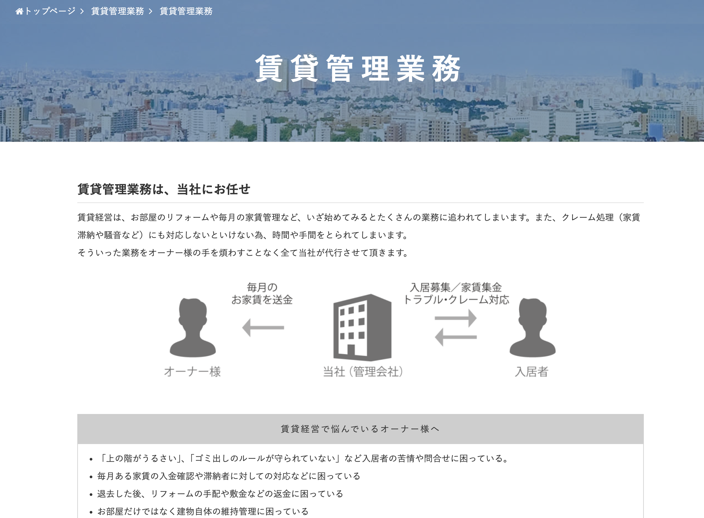
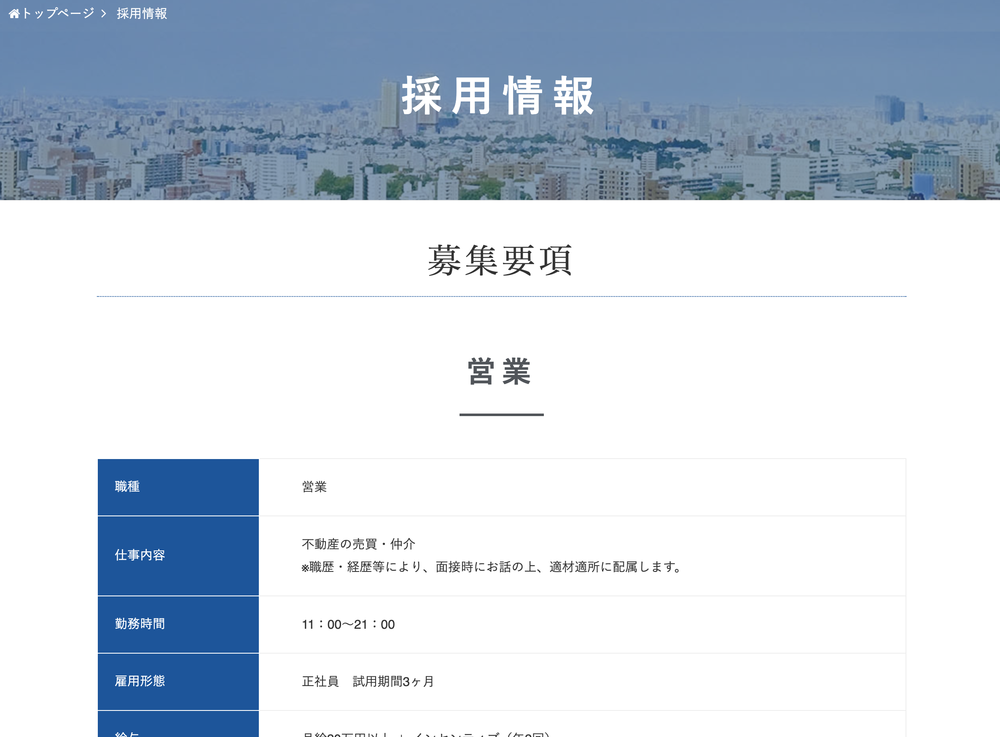
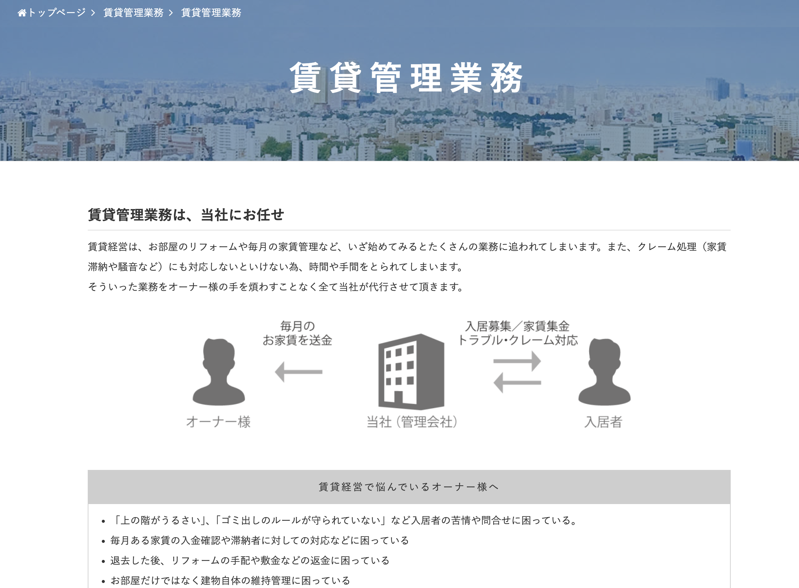
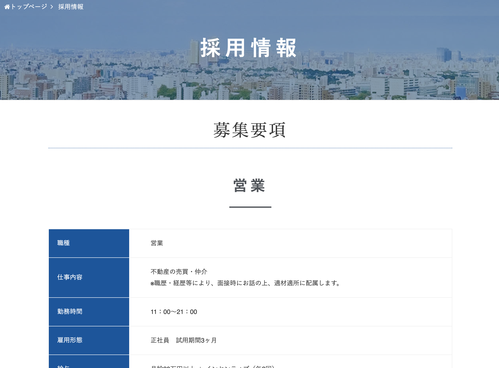

Webサイト
有限会社スズキプラザ北摂
>https://suzuki-ikeda.com/
実績: スズキプラザ北摂様 Webサイト制作
担当: TOP、見積り、お問い合わせページのデザイン・コーディング
詳細:
・WordPressをCMSとして使用し、HTML/CSSでレスポンシブ対応のコーディングを実施。
・TOP画像スライダーには「Meta Slider」プラグインを選定・導入。
・Illustrator/Photoshopを使用し、サイトデザインに合わせた画像・バナーを制作。
・クライアントのご要望に基づき、シンプルさとユーザーにとっての分かりやすさを重視したウェブサイトを制作いたしました。
IRNホールディングス株式会社
>https://i-r-n.co.jp/
実績: IRNホールディングス様 Webサイト制作
担当: TOP、賃貸管理業務、採用情報ページのデザイン・コーディング
詳細:
・WordPressをCMSとして使用し、HTML/CSSでレスポンシブ対応のコーディングを実施。
・不動産会社とイメージしやすくするため、背景画像を「background-image」適用
・Illustratorを使用し、サイトデザインに合わせたアイコンを制作。
・クライアントのご要望に基づき、黒と青を基調としたウェブサイトを制作いたしました。
 



こんかつ和歌山
>https://www.kekkon-wakayama.com/
実績: こんかつ和歌山様 Webサイト制作
担当: TOP、料金プランページのデザイン・コーディング
詳細:
・WordPressをCMSとして使用し、HTML/CSSでレスポンシブ対応のコーディングを実施。
・バナー画像を、Illustrator、Photoshopを使用して制作
・明確なデザイン指示に基づき、その意図を正確に理解し、高品質な成果物の制作に努めました。
有限会社三崎工業
https://misakikg.jp/
実績: 三崎工業様 Webサイト制作
担当: 全ページのデザイン・コーディング
詳細:
・WordPressをCMSとして使用し、HTML/CSSでレスポンシブ対応のコーディングを実施。
・新着情報の更新、毎月定例の更新を行いやすいように設計。
・社長様の思いを形にするため多くのディスカッションにて制作致しました。